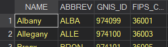
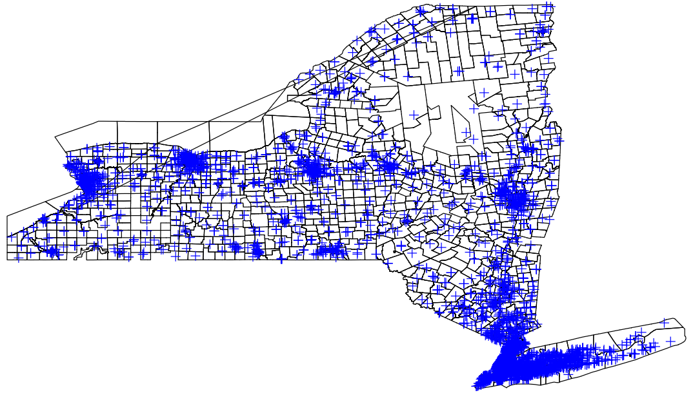

Lab 5 - Making Maps
Overview
Making maps can be an incredibly useful and powerful analytic and descriptive tool in any analyst’s toolkit, and that’s particularly true for anyone working around public policy. Maps can help us visualize a problem, spot particularly troublesome areas in the geographic space we are governing, and identify areas that might need new or different allocations of resources. In this lab, we are going to make a few different maps using data from the Common Core of Data (CCD) - the national data warehouse for data on public schools - and the American Time Use Survey (ATUS). I have already downloaded and cleaned the data we will need here, but I will walk through some of the cleaning in the setup so that you can re-create the process from scratch.
Geographic Information System (GIS) data is a very broad field. This lab is a short introduction to some basic concepts, but the topic could fit an entire semester of content. Broadly, you can think of two buckets of technical skills important for working with GIS applications - production of GIS data and use of GIS data. We will be working in the latter bucket of skills here.
GIS data
GIS data refers to data that has been collected and stored in a way that can allow for the projection of data onto a geographic representation of where that data was produced in the physical world. The primary software and service used in professional applications of GIS data is ArcGIS or a combination of packages in R that often works with ArcGIS. However, Stata has several packages and integrations that also allow for the creation of fairly polished maps with data. To make use of GIS data, you often need data that has been geocoded - that is, observations also include longitudinal and latitudinal coordinates for where an observation took place and, often, x and y coordinates for mapping the latitude and longitude onto a given map shape. To work in Stata, you are generally going to need a few things:
- A shapefile (typically in the ESRI format).
- A dataset with geographic identifiers.
- A dataset with both identifiers and the information you want to graph on a map.
The Census Bureau has created a wealth of ESRI format shapefiles for many geogrphic units in the United States. Often a shapefile you need can be found using a simple search for what you’re trying to map (e.g., New York) and shapefile, e.g., “New York shapefile.” For instance, New York’s can be found here. Downloading the .zip folder with the shapefile will reveal a whole host of files:
We only need the .dbf and the .shp file for working with the New York map in Stata. Don’t worry: we won’t be working with the complexities of this geometric data directly. We will use some packages that will convert this data into simple geographic identifiers we can use to merge our geocoded data into and use Stata to create the maps we want.
The basic process for making a map will be: 1. Download the shapefile and the data you want to map. 2. Ensure you have a matching geographic identifier in both the shapefile and the geocoded data you want to map. 3. Convert the shapefile to a Stata .dta datafile. 4. Merge in the data you want to map. 5. Use spmap or maptile to make the map you need.
Data for this lab
For the CCD school data, there were two datafiles used to create the data we will be using in this lab. We will begin by creating a map of all the public schools in New York state. We will then look at a few ways to modify the look and feel of that map. And we will close by creating a map that plots schools by the size of their student body. What this means is we need 1) the directory data of the schools with geocodes and 2) school-level enrollment data. NCES provides the addresses for all public schools in the US in their directory data and, through a collaboration with ArcGIS, the geocoded directory data is publicly available (the raw datafiles can be downloaded here). We will also want enrollment data for the last step, so I downloaded the membership data (found here), cleaned it, and merged it with the geocoded directory data to create the data for this lab.
I walk through the cleaning of this data at the end of the lab.
The geocoded data looks like this:
I want to flag a few important features of the data that makes this data useful. First, included in the data are the x and y coordinates of the location of the school (named, helpfully, x and y). You’ll notice that these are the same as the longitude and latitude coordinates of the address. The data also provides the street address, which can be used with other packages to get geographic coordinates if you are working with data that does not have the coordinates already coded for you. Second, the data includes a unique identifier for every school (ncessch) that allows us to link this geographic information with other school characteristics. This can be useful for visualizing things like schools with concentrated poverty, areas with highly racially segregated schools, areas with a lot of highly effective schools1, and many other policy relevant data elements. Finally, not shown in the snippet but in the data, you can find multiple codes for different levels of geographic information - counties, MSAs, states, and so on - that can be used to link the school data to other aspects of the communities shools are in. For our purposes, we will be using cnty (below) to link this data with the shapefile data for our maps. Note that the cnty variable in our schools data is a numeric variable and already includes the state fips (36) and county fips (the last three digits). I flag this here because we will need a matching identifier in our shapefile data (this will make sense later).
Making Maps in Stata
In Stata, there are a few different packages that assist in making maps. A lot of the packages are for helping Stata convert the file formats common in GIS datasets into a format Stata can recognize and use. The rest are packages that provide syntax for creating maps with Stata code - important for our purposes of using GIS data. The two main packages for making maps in Stata are spmap and maptile. While spmap is more flexible and allows you to use your own map inputs for making more custom maps, that flexibility comes at the cost of being a little more complex to use well. Meanwhile, maptile is a simpler wrapper for spmap that allows you to plot quantiles of data across counties or states in a variety of styles; it is less flexible but far more straightforward to use. We will go through some examples using both.2
Packages
Let’s begin by starting our .do file and installing the packages we will need.
cd "C:\rpad504\"
local today : di %tdCY.N.D date("$S_DATE","DMY")
log using "logs\lab5_`today'.log", replace
ssc install spmap, replace
ssc install shp2dta, replace
ssc install mif2dta, replace
ssc install maptile, replace
ssc install statastates, replaceThere are also a few different map templates available in maptile. We will go ahead and download those too.
maptile_install using "http://files.michaelstepner.com/geo_county2014.zip", replace
maptile_install using "http://files.michaelstepner.com/geo_state.zip", replace
maptile_install using "http://files.michaelstepner.com/geo_statehex.zip", replaceAlright, now we have everything we need to make some maps. Let’s get started.
Plotting Points
We will start by creating a few maps of all the public schools in New York. To do this, we will be using spmap and the ny_schools_geo.dta datafile in the lab folder. We will start by using the shp2dta command we just installed to create a dataset with the geographic identifiers for merging in data and a dataset with the coordinates for making the map. The code is fairly straightforward.
shp2dta using "data\tl_2016_36_cousub.shp", database(nydb) coordinates(nycoord)Note that nydb and nycoord are simply names I chose for the datafiles with geographic identifiers and coordinates, respectively. The command will generate two new .dta files in your main folder. Let’s open the nydb dataset first and look at the geographic identifiers.
use "nydb.dta"
Note that the state FIPS and county FIPS are separate in this datafile. They are also yellow, which tells us that they are stored as a string format in Stata rather than a number. We will need to create a new variable with the same name as the county identifier in our school data (cnty) and the same format (numeric). We will do that with two simple lines: concatenate (which serves to combine the information from two variables into a single variable, preserving the order of the digits in the new combined variable) and generating a numeric version of the string variable. Then we will save and clear this data.
egen cnty1 = concat(STATEFP COUNTYFP)
gen cnty = real(cnty1)
sort cnty
save "data\nydb.dta", replace
clearNow let’s open the schools data and merge in the geoidentifers from the shapefile using the cnty variable we just created.
use "data\ny_schools_geo.dta"
sort cnty
merge m:m cnty using "data\nydb.dta"
drop _merge
egen schid = group(name street ncessch)
sort schid
quietly by schid: gen dup = cond(_N==1,0,_n)
tab dup
drop if dup>0After we remove duplicates in our datafile, we should have 4,800 observations. Now we’re ready to start mapping! We will use the unique school identifier we created in our previous step (grouping the observations by name, street, and ncessch or the school name, street address, and NCES identifier).
This is not an ideal data structure because we will be relying on the awful m:m merge that we should avoid in nearly all cases. A better shapefile would have been one using New York school districts as the organizing unit. However, our county map will suffice for illistrating map creation even in suboptimal circumstances.
Let’s start with a very basic map of all the schools in New York.
spmap using nycoord, id(schid) point(xcoord(x) ycoord(y))
graph export "output\nymap1.png", replaceWhich should give us something like this:
Of course, these dots are a bit large and somewhat hard to see. Let’s go ahead and change their color to something that might stand out a bit more.
spmap using nycoord, id(schid) point(xcoord(x) ycoord(y) fcolor(blue))
graph export "output\nymap2.png", replaceLet’s try a different plot style.
spmap using nycoord, id(schid) point(xcoord(x) ycoord(y) fcolor(blue) shape(+))
graph export "output\nymap3.png", replace
Note that the center of the plus signs is the more precise location of the school. Okay, so that’s how you change the style and the color of the symbols on the map. You can add a legend to capture what symbols mean and plot different types of schools (say, charter versus traditional or elementary, middle, and high schools) with different symbols (using the by option). The help file for spmap provides a comprehensive run-down of those options. For now, we are going to add a little more information to our map. Schools vary quite considerably in their size and it would be great if we could visualize where the large schools are in the state. Well, since I cleaned and merged the enrollment data into our schools dataset, we can use the enrollment count at the schools to inform the relative size of our school plot points. Specifically, this will have Stata create plots of varying sizes where the size of the plot captures the number of students in a given school relative to other schools in the dataset (in this case, the state).
spmap using nycoord, id(schid) point(xcoord(x) ycoord(y) fcolor(blue) shape(o) prop(enroll))
graph export "output\nymap4.png", replaceNotice that this creates kind of an ugly blob of plots. Yes, some of them vary in size, but it’s really hard to tell what’s going here. We’re going to add and outline to the plot points and tone down the brightness of the fill color to get a better sense of the data.
spmap using nycoord, id(schid) point(xcoord(x) ycoord(y) fcolor(blue*0.25) ocolor(black) shape(o) prop(enroll))
graph export "output\nymap5.png", replaceMuch better! Note that this sort of map, in conjunction with good, clean, well organized data, can provide similar information about other kinds of variables (e.g., caseload across welfare or drug addiction treatment offices, homeless services, crime hotspots by type of crime). The maps created here are just a rough guide to help you understand how to make maps with data in Stata to get you started.
Plotting Quantiles or Bins
Of course, we often want to know how things look across the country and how states are doing relative to one another. For this kind of analysis, we might find the simplicity of maptile to be more flexible. Let’s clear out the data in our memory and load the volunteering data:
clear
use "data\state_volunteer.dta"This dataset has been cleaned and includes state names, state abbreviations, state FIPS codes, and the average minutes spent volunteering in a typical data drawing on ATUS data from 2003 to 2017. Since I have already setup the data at the state level, we can dive right in to making maps with maptile. Let’s start with a conventional map of states:
maptile state_volunteer, geo(state)
graph export "output\volmap1.png", replaceYielding this map:
In maptile syntax, the geo option specifies which geographic map you are using. Note that you have to download the geographic map you want to use ahead of time (we did this at the beginning of the lab). You can find a variety of compatible maps on the creator’s website. What maptile does is it takes the variable you specifie (in our case state_volunteer) and bins it into quantiles of that variable and then shades the states according to their quantile. You can specify the number of quantiles you’d like to use or the range of each bin you want to group observations by in place of quantiles and some types of data may call for these modifications.
Note that in a conventional map, like we see above, the variation in state geographic sizes might hide some states (my beloved D.C.!) or misrepresent the prevalence of something (e.g., looking at vote shares by party ID might be misleading at the state-level because some states have more sparsely populated land - here’s looking at you Wyoming). One approach to fix this favored by some is to use evenly sized hexagons for presenting state data. Here, since we downloaded hex maps earlier, we would simply change the geographic code and point to the variable that has abbreviations for labeling the hexagons (important now that they are losing their distinctive shapes).
maptile state_volunteer, geo(statehex) labelhex(state)
graph export "output\volmap2.png", replaceAnd that’s all for this lab on mapping. Let’s end our log.
log closeFootnotes
Defining and identifying effective schools is a large area of research with several active debates. One useful and fairly robust measure relies on school-specific growth scores, but that’s a topic for another class.↩︎
These are both user-written packages by Michael Stepner at MIT (
maptile) and Maurizio Pisati (spmap). User contributions to both Stata and R are the difficult, voluntary, but wildly valuable work that some scholars and data analysts do to make these tools widely available to analysts and researchers everywhere.↩︎